NAME
AGE
STYLE
IDEOLOGY
POWER
STRENGTH
WEAKNESS
JAMES TYNDALL
James Tyndall
43
Chaotic Neutral
Reponsible Anarchy
Catches Falling Objects
Eternal Optimism
Oblivious to Danger
X

Hi!
As you may have guessed, my name is James. I am currently studying a Diploma of IT at Coder Academy, with the intention to become a full stack web developer.
I have done many things in my life, I work hard in construction, but I've come to a point where I need to change my career. As they say, the mind is willing...
I have always been very technically minded, which has served me well in construction and other fields, but I never studied in purely intellectual terms. I have, however, trained my memory to a very impressive level by avoiding reliance on redundant memory techniques like written lists, satnavs and phone alarms. For example, I can now build the plans to a structure from the ground up in my mind, having committed to memory most of the techniques and material data.
I have uncanny recall and remember conversations from years past, annoying people who want to reneg their agreements. These skills have led me to coding.
So please, allow me to introduce you to my first website, a flex structured portfolio to showcase my first four weeks on the job!
James Tyndall
A bear introduction
Hi!
As you may have guessed, my name is James. I am currently studying a Diploma of IT at Coder Academy, with the intention to become a full stack web developer.
I have done many things in my life, I work hard in construction, but I've come to a point where I need to change my career. As they say, the mind is willing...
I have always been very technically minded, which has served me well in construction and other fields, but I never studied in purely intellectual terms. I have, however, trained my memory to a very impressive level by avoiding reliance on redundant memory techniques like written lists, satnavs and phone alarms. For example, I can now build the plans to a structure from the ground up in my mind, having committed to memory most of the techniques and material data.
I have uncanny recall and remember conversations from years past, annoying people who want to reneg their agreements. These skills have led me to coding.
So please, allow me to introduce you to my first website, a flex structured portfolio to showcase my first four weeks on the job!
JC Harvey
NAME
OCCUPATION
PERSONALITY
POLITICS
SPECIAL ABILITY
STRENGTH
WEAKNESS
JC Harvey
Children's Author
Ordered Good
Liberal Socialist
Squeaky Clean
Parse'n'Phrase
Scrutiny
X
JC Harvey is my very first pen name, signed to the first book I ever completed, titled "The boy who fell through time.".
In fact, JC is the reason I signed up with Coder Academy in the first place. I had developed a children's book series based around a character named Lizzie Boothouse. there was a lot of online stuff that I wanted to do with the model, and I also wanted some skills that would put the cold hard to good use.
Instead Covid, shutdown, so landscaping and two course deferrals. Still, we're here now.
So here's a picture of Lizzie, and an excerpt from "The Boy Who Fell Through Time" by yours truly.
Jimmie Christo
In fact, JC is the reason I signed up with Coder Academy in the first place. I had developed a children's book series based around a character named Lizzie Boothouse. there was a lot of online stuff that I wanted to do with the model, and I also wanted some skills that would put the cold hard to good use.
Instead Covid, shutdown, so landscaping and two course deferrals. Still, we're here now.
So here's a picture of Lizzie, and an excerpt from "The Boy Who Fell Through Time" by yours truly.
{kind=link}
JIMMIE CHRISTO
NAME
OCCUPATION
BEST WORK
FAVOURITE BOOK
GOALS
STRENGTH
WEAKNESS
@therealjimmiechristo
Author, Playwright
Vampire Joe(2019)
Roget's Thesaurus
14 novels
>100wpm
English Whip
Spendaholic
X
Jimmie Christo is a pen name and business personality I developed as the frontman of my more risque, irreverent and adult-themed novels. I felt the need to separate JC Harvey from mature content. I cast about for a name for about
five seconds.
My name is James Christopher...
Jimmie Christo was born from necessity and laziness, purely and simply, yet the best thing about Jimmie Christo: There is only one. In the world.
Characterisation: Christo is a brash, egotistical malcontent hell-bent on delivering miniscule corruptabites to an unsuspecting super-ape utopia.
Here's a sample of my debut novel, Vampire Joe.
Jimmie Christo
My name is James Christopher...
Jimmie Christo was born from necessity and laziness, purely and simply, yet the best thing about Jimmie Christo: There is only one. In the world.
Characterisation: Christo is a brash, egotistical malcontent hell-bent on delivering miniscule corruptabites to an unsuspecting super-ape utopia.
Here's a sample of my debut novel, Vampire Joe.
JAMES@ORMUNDO
VOCATION
CLASS
SCALE
WEB PRESENCE
GALLERY
STRENGTH
WEAKNESS
Landscaper
Tradesman, Designer
Chaotic Good
Infectious Enthusiasm
Time Management
X

For many years I have run a landscaping business here in Melbourne, Australia. I learned many things during this time; construction methods, how to use tools and power tools correctly (and probably incorrectly at times too), stock management, materials types and tolerances, customer liaison and consultation, how to take a brief (so important!), design fundamentals, geometry, staff management...
I could write a three page list of all the things running a business in the construction industry has taught me.
Sadly, I have become prone to injury after twenty years, and recovery is not what it used to be. It's time for a change! I'm currently running this business while I study, so please bear with me. While I do that, you might have a peek at these.
james@ormundo
Working the class
For many years I have run a landscaping business here in Melbourne, Australia. I learned many things during this time; construction methods, how to use tools and power tools correctly (and probably incorrectly at times too), stock management, materials types and tolerances, customer liaison and consultation, how to take a brief (so important!), design fundamentals, geometry, staff management...
I could write a three page list of all the things running a business in the construction industry has taught me.
Sadly, I have become prone to injury after twenty years, and recovery is not what it used to be. It's time for a change! I'm currently running this business while I study, so please bear with me. While I do that, you might have a peek at these.
 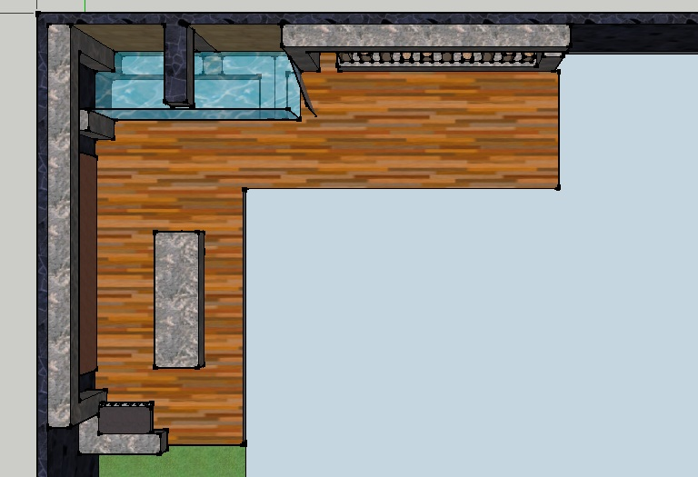
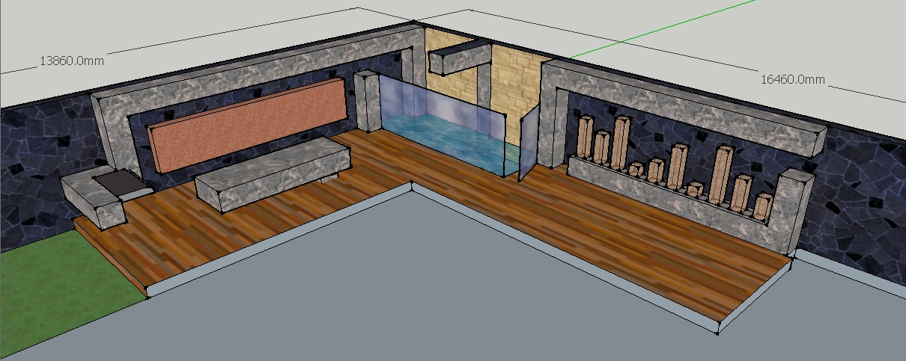
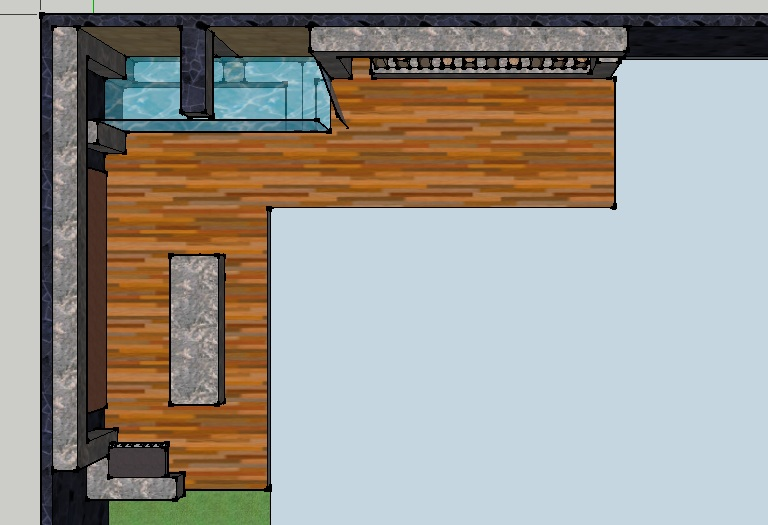
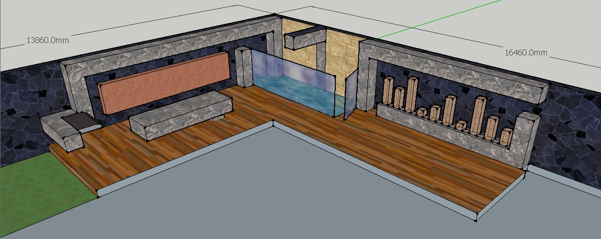

.jpg) 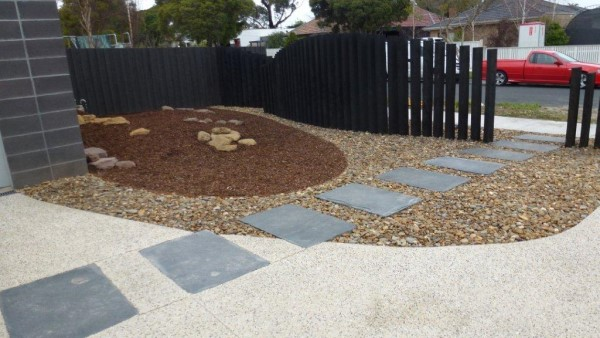
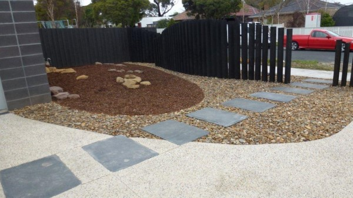

 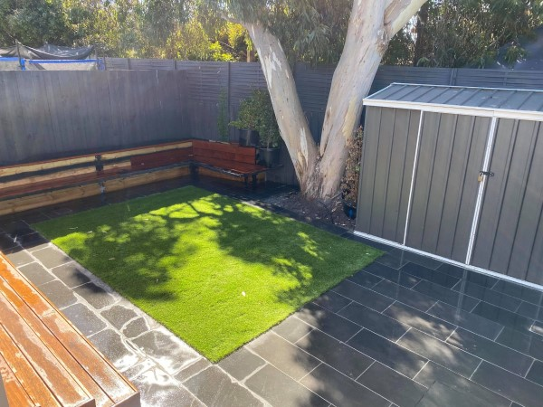
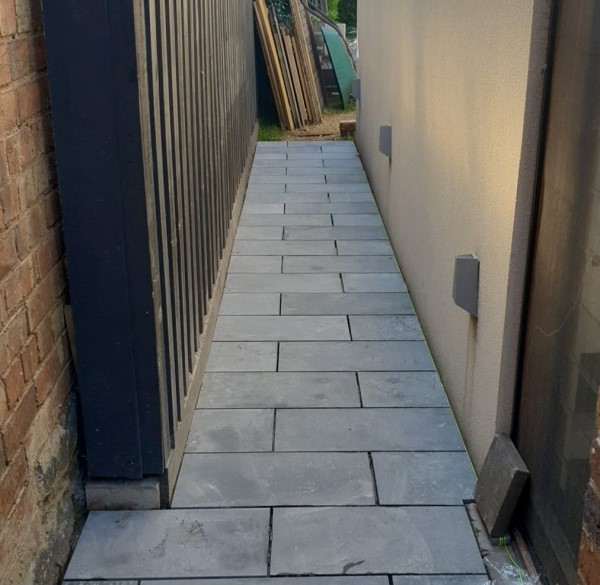
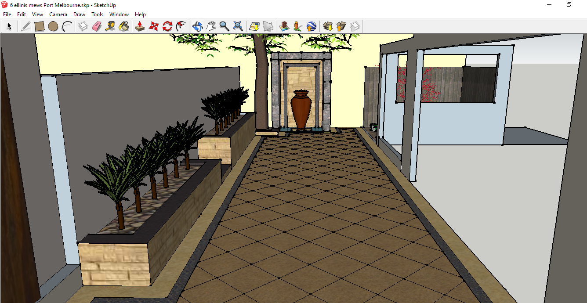
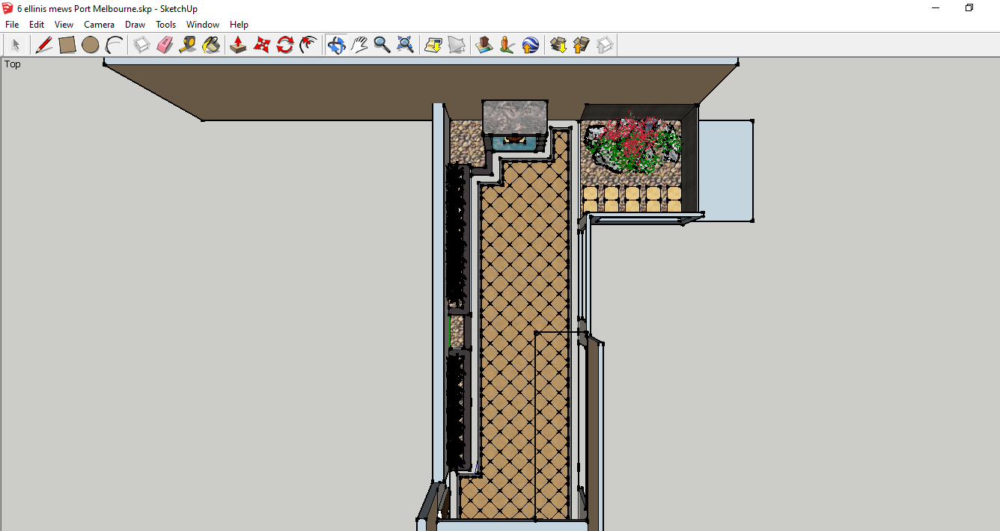
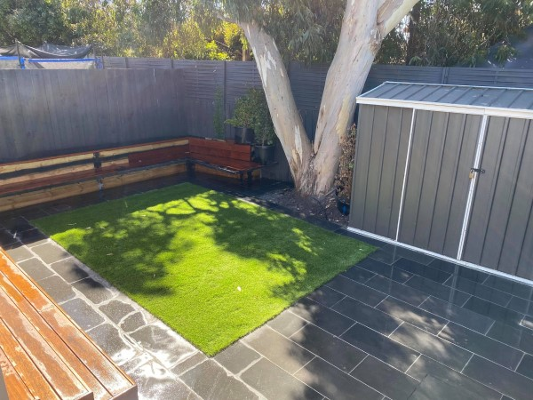
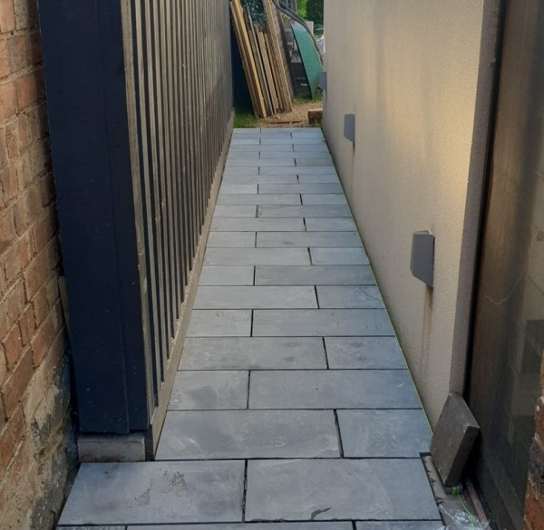
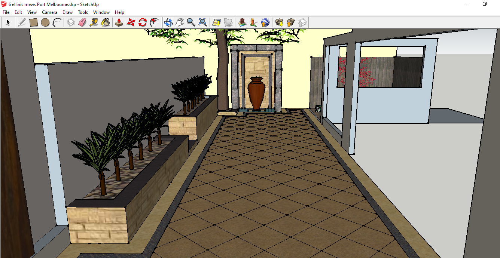
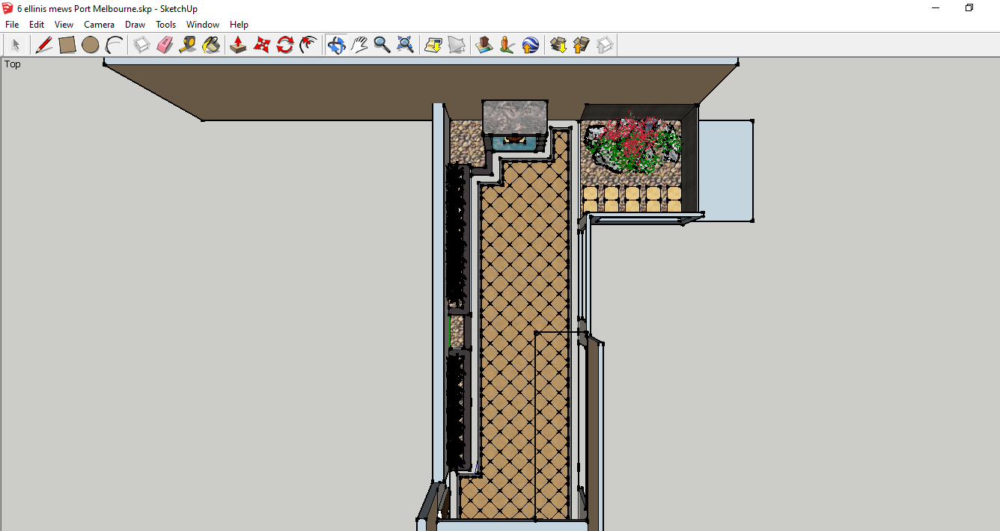